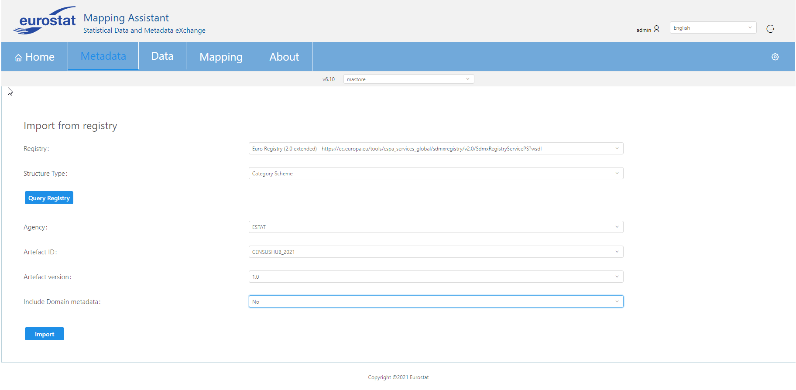

This screen supports the import of an artefact from a registry. The first step that is needed is to select from the drop down menu the registry that the user wants to query. This menu includes all registries that are defined from admin user. Afterwards, the artefact type should be chosen from the second drop down menu. Finally, in order to get the artefact information the user just clicks Query Registry button. All the needed information is shown in the relevant areas. In order for the selected artefact to be imported in the selected mapping store (that is defined in the dropdown selection under the menu bar at the top) a single click in Import button is needed. In the below screenshot "Euro Registry (2.0 extended)" was used in order to get a Category Scheme.
There is an extra field (boolean drop down menu) when a Category Scheme is selected to be imported, called "Include Domain metadata". By selecting true in this field all relevant artefacts (Categorisations, Dataflows, Codelists etc.) will be also imported.

While importing a Datastructure, an extra radio check button appears (Create Dataflow from DSD) which can create a Dataflow from a Datastructure